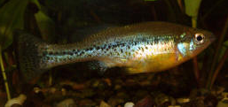

Systématique
- Ordre : Cyprinodontiformes
- Famille : Goodeidae
- Genre : Ilyodon
- Espèce : I. lennoni
- Auteur : Meyer & Förster, 1984

Ilyodon lennoni est un poisson Goodeidé endémique du Mexique. Bien que sa validité taxonomique ait été débattue (parfois considéré comme un synonyme d'Ilyodon furcidens), il reste identifié comme une unité distincte dans les réseaux de conservation. Le corps est robuste, comprimé latéralement, avec un profil dorsal légèrement voûté. Sa coloration de base est gris-argenté avec des reflets métalliques, et une bande latérale sombre est souvent visible, accompagnée de points noirs irréguliers sur les flancs.
Il atteint une taille de 7 à 9 cm pour les femelles, les mâles étant généralement un peu plus petits (6 à 7 cm). C'est un poisson puissant, bien adapté aux courants modérés, doté de nageoires bien développées qui lui permettent une nage rapide.
Ilyodon lennoni est une espèce active et parfois turbulente. En aquarium, il se montre très dynamique et peut harceler des espèces plus calmes ou plus fragiles. Une hiérarchie s'établit au sein du groupe, où les mâles dominants paradent vigoureusement. Contrairement au genre Allotoca, les Ilyodon sont des poissons plus "rustiques" et moins timides.
Dans la nature, ils occupent des rivières et des ruisseaux. En captivité, ils nécessitent un volume de nage important et une eau très bien oxygénée. Ils apprécient un décor composé de roches et de racines, ainsi que de zones plantées périphériques. Une filtration puissante est recommandée pour simuler le courant de leur habitat naturel.
Mode : Vivipare matrotrophe.
La reproduction est typique des Goodeinae. La gestation dure environ 50 à 60 jours. Les embryons se développent dans l'ovaire de la femelle et sont nourris via des trophotaeniae. Les portées sont relativement importantes pour des goodeids, pouvant varier de 20 à 50 alevins selon la taille de la femelle.
Les jeunes naissent à une taille de 12 à 15 mm. Ils sont robustes et acceptent immédiatement des nauplies d'artémias ou de la nourriture sèche finement broyée. Bien que moins cannibales que d'autres genres, les adultes peuvent manger les alevins si le bac manque de refuges.
Dimorphisme sexuel : Le mâle possède un andropode (nageoire anale modifiée). Il est plus petit et souvent plus coloré, avec des liserés plus marqués sur les nageoires (souvent jaunes ou noirs). La femelle est plus grande, plus massive et possède une nageoire anale normale.
Espérance de vie : 4 à 6 ans en conditions optimales.
L'espèce est originaire du bassin du Rio Balsas et de ses affluents, notamment dans l'État de Guerrero au Mexique. Elle fréquente les zones de courant des rivières, sur des substrats rocheux ou graveleux. L'eau y est généralement claire, bien oxygénée, avec un pH alcalin.
Contrairement à d'autres Goodeids de haute altitude, I. lennoni supporte des températures un peu plus élevées, bien qu'il préfère rester dans une gamme de 20 à 25 °C. Son habitat subit les pressions habituelles des cours d'eau mexicains : pollution et déforestation des berges.
Répartition

Origine naturelle :
- Mexique : Bassin du Rio Balsas, État de Guerrero (Rio Chacamerito).
- Localité type : Rio Chacamerito, Guerrero, Mexique.
Statut incertain dans la nature dû aux confusions taxonomiques, mais considérée comme vulnérable en raison de sa distribution restreinte.
Paramètres de maintenance
Température : 20 à 25 °C.
pH : 7,0 à 8,5.
GH : 10 à 20 °dGH.
Courant : Modéré à fort.
Volume conseillé : Minimum 120 à 150 L pour un groupe de 6 à 10 individus.
Régime alimentaire
Régime : Omnivore à forte tendance alguivore.
Dans la nature, il broute le périphyton (algues et micro-organismes sur les roches). En aquarium, il accepte tout type de nourriture, mais il est crucial de lui fournir une part végétale importante (paillettes à base de spiruline, légumes pochés) pour éviter des problèmes intestinaux. Il consomme aussi volontiers du vivant ou du congelé.